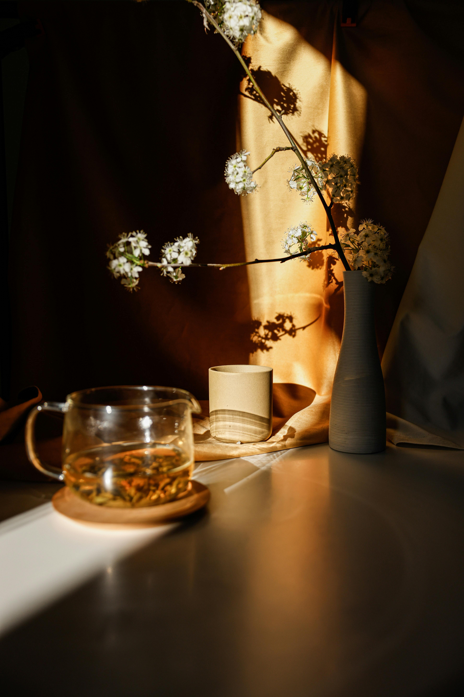
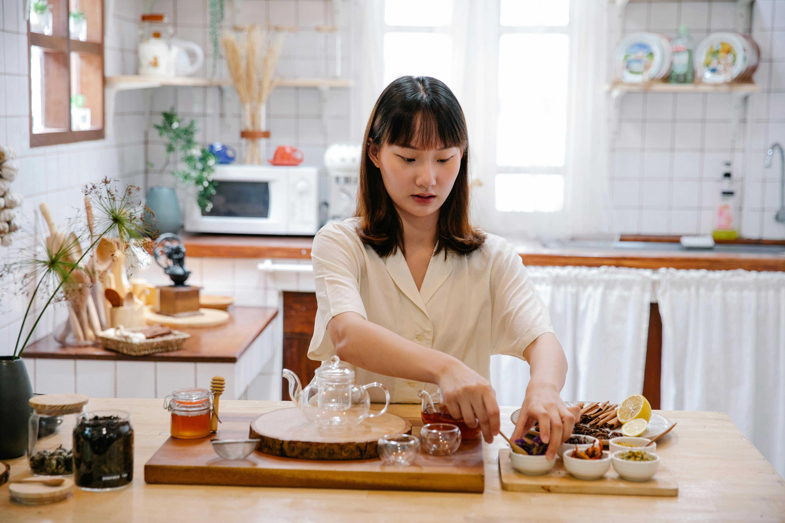
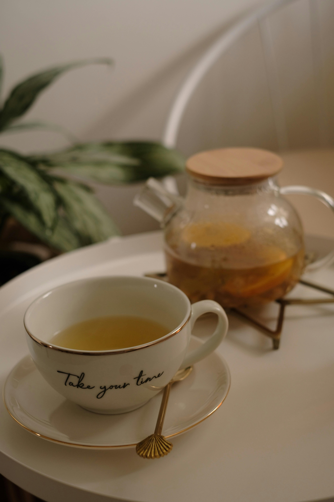
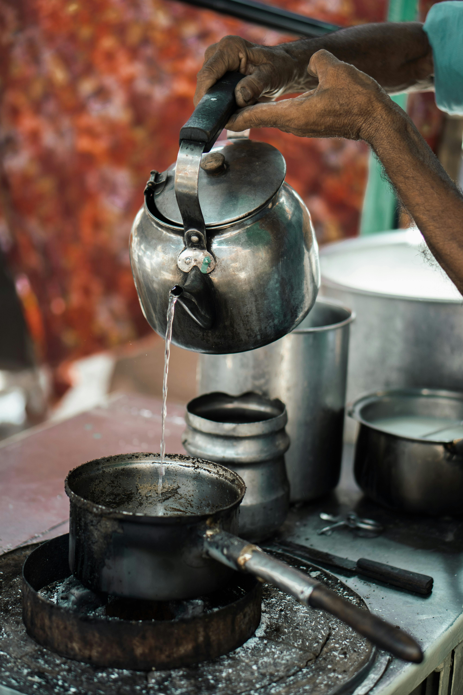
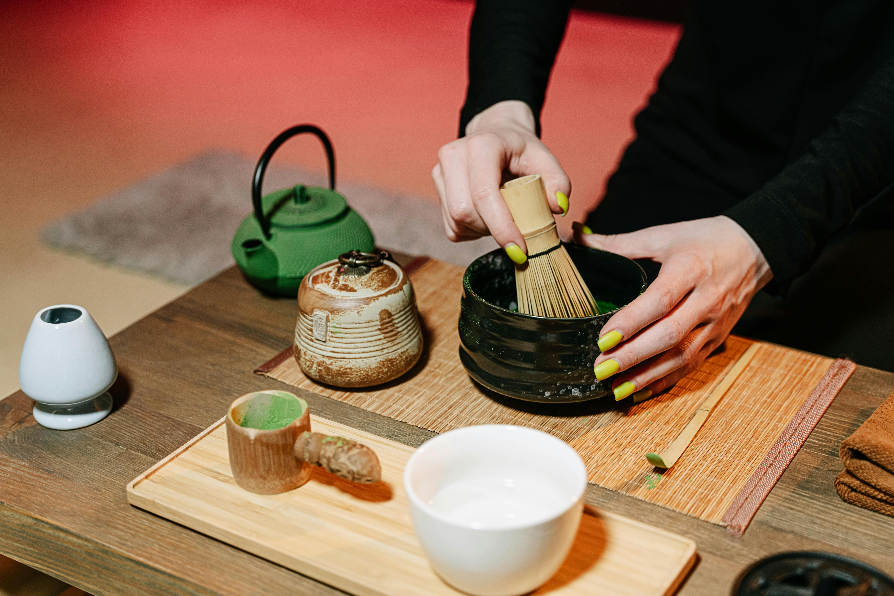

More Than Tea.
A Return to Stillness.
A space where rituals slow time, and presence becomes the experience.
Guided Tea Rituals
Calm, intentional sessions
Meditation Experiences
Designed for clarity & stillness
4.9 Experience Rating
Trusted by 5000+ guests

Our Beginning
Born from a desire to escape the noise, Noir Brew blends the art of tea with the practice of mindfulness. We didn't just want to serve tea — we wanted to provide a gateway to stillness in a world that never stops moving.
Our journey began in a small quiet corner, where the simple act of pouring water became a catalyst for change. Every leaf sourced, every vessel chosen, is a testament to our commitment to a deeper way of living.
Our Philosophy
Three guiding principles that anchor everything we do — from leaf to soul.
Stillness
We believe clarity begins in quiet moments. It is in the absence of noise that we truly hear ourselves. Every space we create is an invitation to pause.
Ritual
Every detail is intentional, from the temperature of water to the curve of each cup. Rituals transform the ordinary into the sacred.
Presence
The goal is not escape, but awareness. Each sip invites you to inhabit the now — the only moment that truly matters.
A space shaped by
light, texture, and silence.
Every element of Noir Brew is curated to encourage presence. From raw tactile surfaces to the deliberate play of shadows, the environment is your first step toward stillness.





Transforming the Ordinary
A guided journey through your ritual, from the first step through our doors to the final sip of tea.
Arrival
Step into a calm, minimal environment designed to disconnect you from the digital world and ground you in the physical.
Preparation
Tea is crafted with precision. Each movement is a meditation, each temperature measured to unlock the tea's true essence.
Presence
Guided into stillness, you experience the nuances of taste, aroma, and the gentle passing of time.
Reflection
Leave with a renewed sense of clarity. The ritual lingers — a quiet recollection that deepens with each return.

Terroir &
Traceability
Every leaf tells a story of the soil, the climate, and the hands that nurtured it. We partner directly with small-scale tea masters who prioritize biodiversity over volume.
Your Moment
Awaits
A moment designed entirely for you — where silence becomes presence, and time gently slows.
Takes less than a minute · No commitment required